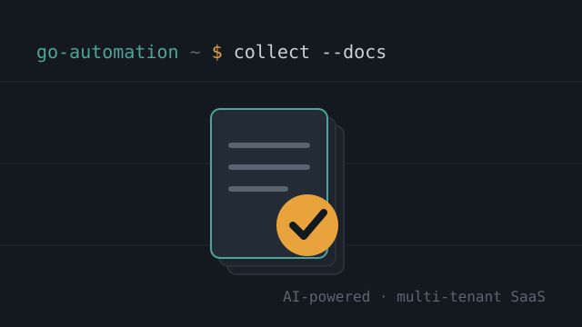

Document Collection System
An AI-powered, multi-tenant SaaS platform that lets firms collect, verify and reuse documents from their customers, built end to end at Go Automation.
As Head Developer at Go Automation, I'm architecting and building this document-collection platform on my own: a genuinely new take on a problem existing tools don't solve well. Firms create cases, and their customers upload required documents through secure, no-login public links; the system works out exactly what each case needs, verifies what comes in, and can automatically reuse a document a customer already supplied on a previous case instead of re-chasing it.
It's a multi-tenant application with strict per-firm data isolation (Postgres row-level security), configurable custom fields, AI-driven extraction to check document freshness, and a consent-gated cross-case reuse engine.
I develop it through a proprietary workflow built around Claude Code and Codex: Claude Code works with full context of the entire application and its roadmap, and every feature is adversarially tested with Codex as soon as it's built, before it ships to production. It's a private setup only I have access to, and it's massively increased how much I can ship.